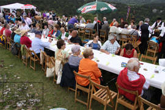

En 2010 hemos cumplido un reto que habíamos marcado desde el inicio: reunir a los 4 únicos pueblos en España con este nombre: San Pantaleón de Aras (Cantabria), San Pantaleón de Cabanas (Lugo) y San Pantaleón del Páramo (Burgos). Este encuentro tuvo lugar el día 29 de Mayo. Fue inolvidable. Y con el compromiso de celebrarlo cada año en uno de los pueblos, el próximo será en San Pantaleón de Aras (Cantabria).
-
Acudieron 250 personas, venidas de los cuatro pueblos, así como los vecinos del Valle de Losa que quisieron acompañarnos y compartir con nosotros este bonito día de fiesta. La jornada transcurrió en la Peña, tuvo lugar una Misa en la Ermita, oficiada por los sacerdotes de los cuatro pueblos, nos acompañaron dulzaineros, gaiteros y piteros, interpretando la música típica de cada Comunidad Autónoma a la que pertenecen los pueblos.
- 
{kind=link}
También estuvo presente en la Misa el Coro Parroquial de San Pantaleón de Aras y el Grupo de Danzas del Centro Castellano Leonés de Santurce (Vizcaya), que junto con el Coro del mismo Centro se encargaron de realizar las ofrendas. Seguidamente los anfitriones ofrecimos una comida popular para todos los invitados. Además nos acompañó la escritora Dña. Miryam Satrústegui Guzmán y nos ofreció una interesante charla sobre San Pantaleón.